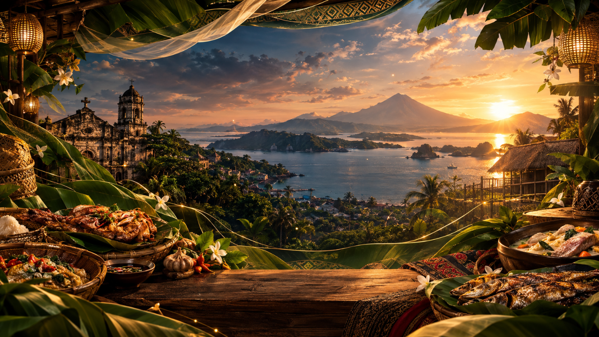

Project Leader / Programmer
Arapoc, Jhurenz M.
Leads the project and builds the interactive website experience.
A world of flavor, starting at home
We’re starting with the dishes and traditions of the Philippines, with a journey set to grow and share food stories from around the world.

Our first table: the Philippines.
Featured dishes
Timeless recipes, authentic flavors. One unforgettable journey.
View all dishesNo dishes found. Try another flavor.

Our story
In the Philippines, recipes are rarely written down. They live in the hands of our lolas, in Sunday lunches that stretch into afternoon, and in the first bite that takes you somewhere familiar.
Learn more →From the journal
The colors, hands, and little rituals behind every plate.


The people behind the journey
Meet the team who brought Tahak sa Panlasa from an idea to a digital table for everyone.
Every page, story, and flavor trail was shaped by our team.
Project Leader / Programmer
Leads the project and builds the interactive website experience.
Web Designer
Shapes the visual identity and responsive design of the site.
Content Manager
Organizes the dish details, stories, and cultural content.
Researcher
Researches regional dishes, ingredients, and Filipino traditions.
Documentation Officer
Records the project process, testing, and final documentation.